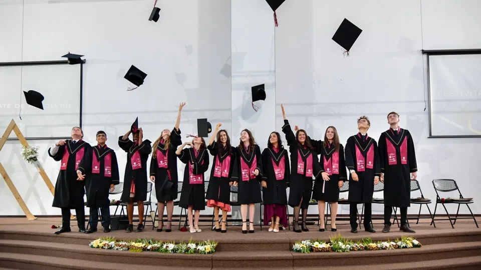

Un părinte
„Muncesc zilnic sub soarele acesta arzător și mă întorc acasă tot sărac.”
— Tata, mi-e foame.
Nu pentru că nu muncește. Pentru că trei caiete și o pereche de încălțări costă mai mult decât are.
Concept, deocamdată · nu e pagina oficială a școlii
Liceul Internațional Integritas · Budiu Mic, jud. Mureș
Școala Adventistă Kusekwa are 700 de elevi și profesori. Comunitatea de acolo mută bănci în fiecare săptămână ca să aibă unde se ruga. În clasa a XII-a plecăm o lună la ei — să ridicăm o biserică și un dispensar.
Un părinte
„Muncesc zilnic sub soarele acesta arzător și mă întorc acasă tot sărac.”
— Tata, mi-e foame.
Nu pentru că nu muncește. Pentru că trei caiete și o pereche de încălțări costă mai mult decât are.

O profesoară
„Elevii mei împart un creion la patru.”
— Doamna, aveți un creion în plus?
Alții nu ajung deloc la școală, pentru că n-au încălțări. Băncile goale se văd din prima.

Pastorul
„Biserica mea nu e făcută din ziduri. E făcută din șapte sute de suflete.”
— Pastore, când o să avem și noi o capelă?
Se strâng în sala școlii, pe bănci mutate în fiecare sâmbătă. La ziduri nu s-a ajuns încă.
O pereche de încălțări, trei creioane și niște ziduri. Atât despart șapte sute de oameni de o școală și o biserică adevărate.
01 Drumul
Două zboruri, o graniță și restul cu autobuzul. Undeva între Istanbul și Nairobi trecem ecuatorul.
| De la | Până la | Cu ce | Cât |
|---|---|---|---|
| Târgu Mureș | Budapesta | autocar | [de completat] |
| Budapesta | Istanbul | avion | [de completat] |
| Istanbul | Nairobi | avion | [de completat] |
| Nairobi | Sirari (graniță) | autobuz | [de completat] |
| Sirari | Bariadi | autobuz | [de completat] |
| Bariadi | Kusekwa Memorial School | drum de pământ | [de completat] |
02 Cine suntem
„Liceul Internațional Integritas oferă un program educațional care împletește însușirea cunoștințelor teoretice și practice cu studiul Bibliei, în vederea slujirii oamenilor.”
Misiunea școlii, liceulintegritas.ro
La Integritas fiecare clasă are o săptămână de misiune într-un oraș din România: seminarii în școli, stand în centru, azilul de bătrâni, din ușă în ușă. În clasa a XII-a săptămâna se transformă în trei-patru săptămâni, și se petrece în Africa.
De patru ani, clasele terminale de la Integritas au sprijinit proiecte în Africa. Acum e rândul nostru.

03 Clipul
Clipul se montează.
Un minut: patru voci din Kusekwa, apoi intră clasa în cadru. Versiunea în română apare aici, iar celelalte trei la butoanele de sus.
04 Din anii trecuți
Trage cu mouse-ul sau folosește săgețile. Pozele din Africa se adaugă de la colegii din anii trecuți.
05 Visul mare
Dispensarul ține de sănătate, biserica ține de tot restul: școala își primește înapoi sala, iar cele șapte sute de suflete își primesc pereții lor. E singurul lucru pe care îl lăsăm acolo și care rămâne după ce noi plecăm.
Plimbă cursorul peste desen: zidurile se ridică.
| Biserica | [de completat: suprafață, materiale, cost] |
|---|---|
| Dispensarul | [de completat] |
| Drumul celor 30 | [de completat] |
| Total | [de completat] |
06 Parteneri
07 Donează
Donațiile merg prin Fundația Educatio Plena, contul publicat de școală. Cardul, Google Pay și Apple Pay trec prin Stripe-ul școlii; prin bancă e la fel de bine.
Alege o sumă în fișa din dreaptade mai jos → și apasă Donează. Transferul bancar e la fel de bun: IBAN-urile sunt în aceeași fișă, sub „Prin transfer bancar”. Pentru sponsorizare prin contract, scrie-ne la secretariat.
Donează acum